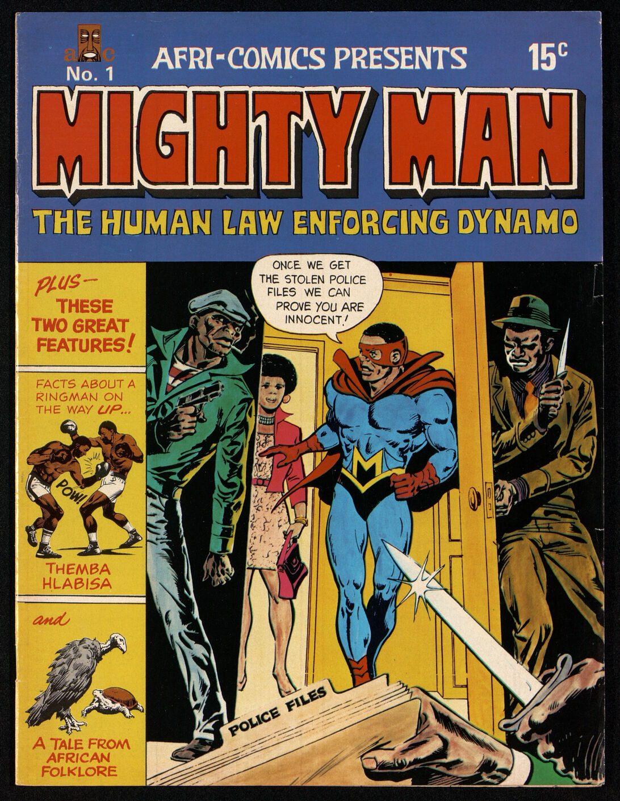

How it works: read the comic pages → answer the question about today's big idea → see what the comic got right and wrong → write 1–2 sentences or answer a second check. Done = all parts green, then turn in at the bottom.
Heads up: Part 4 mentions police shooting student protesters in 1976. There are no pictures of it.
- Apartheid = laws that split South Africa by race (1948–1994)
- Propaganda = messages made to change what people think
- Soweto = a large Black township near Johannesburg
- Township = an area where Black South Africans were forced to live
- Law enforcing = making people follow the law
- Front company = a fake business that hides who is really in charge

Click the page to make it bigger.
Turn in your work
Your work saves on this device, so you can come back later. Your teacher sees it after you turn it in.
Comic: Mighty Man No. 1 (1975), Afri-Comics, Pretoria. Scans: Afri-Comics Collection, UCLA Library Digital Collections (William Worger collection). Shown as a historical source for classroom study.